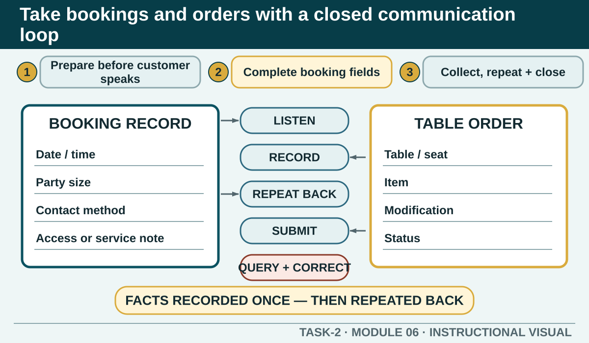

Prior learning
Students can clarify customer requirements and explain products from authorised information.
Task 2 · Lesson 6 of 8
Collect, record, repeat and hand over the details needed for accurate bookings and food or beverage orders while protecting personal information.
Prior learning
Students can clarify customer requirements and explain products from authorised information.
Success criteria
Learning boundary
This lesson supports preparation and formative practice. The current authorised package and trainer/assessor control formal products, observations, dates and submission.
Accurate order taking begins with readiness. Have the approved notebook, docket or POS process available. Understand the current menu or service information, the table or seat system and who can answer questions outside your role. Check that you can record clearly without exposing another customer's information.
Preparation reduces the temptation to rely on memory. It also helps the worker focus on the customer instead of searching for equipment or information during the conversation.
The authorised booking worksheet includes guest name, phone number, email address, reservation date, reservation time, number of guests, special requests, occasion, payment method, confirmation number, additional notes and the person who took the booking. A workplace may use only some fields or apply specific rules; use the current authorised form.
Each field should have a service purpose. Contact details support confirmation or authorised updates. Date, time and guest number control capacity and preparation. Relevant requests support planning. Payment information is sensitive and must be handled only through the authorised system.
A strong booking conversation has a clear opening, purposeful questions, an accurate record and a final repeat-back. Use the workplace wording and policy for cancellations, fees, deposits or confirmation. If that information is not provided, do not make it up.
Video Package
The authorised guidelines describe preparation, professional approach, careful listening, exact recording, clarification, repeat-back and submission to the kitchen or POS system. Drinks may be taken first where that matches the service procedure, and seat or table numbers help the team deliver accurately.
Use only abbreviations that are authorised and unambiguous in the local system. A short note that the writer understands but the kitchen cannot interpret is not accurate communication.
Record a modification exactly and attach it to the correct item and customer position where the system requires it. Confirm the wording with the customer before submission.
An allergy or other food-safety request needs the authorised process. The worker should not translate 'allergy' into 'preference', promise that removing one ingredient removes all risk, or rely on a practice menu. Seek the appropriate advice and keep the customer informed of the next step.
Worked Example
The order is not complete when the worker stops writing. The information must reach the correct work area in a usable form. Closed-loop communication means the sender records or states the message, the receiver can access or acknowledge it, and uncertainty is clarified before production continues.
If availability or timing changes after submission, the new information must travel back through the service team to the customer. A closed loop works in both directions.
Phone view: swipe across the diagram, or use Open larger below.


External media loads only after you choose it.
Source-linked video
Watch for: Listen for the information requested, how details are confirmed and where a read-back prevents ambiguity.
Formative practice
Each option explains the workplace consequence. These responses save on this device.
Written application
Use the supplied fictional record. Do not add a cancellation fee, service time, confirmation process or ingredient claim that is not in the stimulus.
Self-checkApply and keep evidence
Identify missing or ambiguous details before a booking or order is passed to another work area.
Use the check result, activity record and written response as formative learning evidence only. Formal evidence remains controlled by the current package and trainer/assessor.
Next: Provide culturally respectful and disability-inclusive service.
Authorised source note: Grounded in T2-S04, T2-S01 and the validated booking-video package retained from T2-S10. Local booking, POS, abbreviation, timing and allergy procedures remain Teacher to confirm.